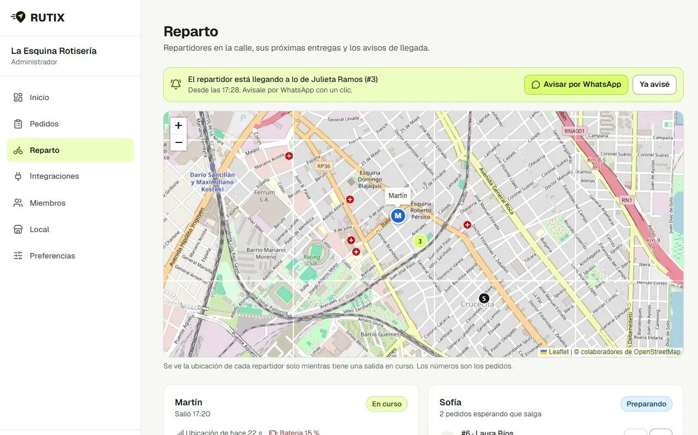
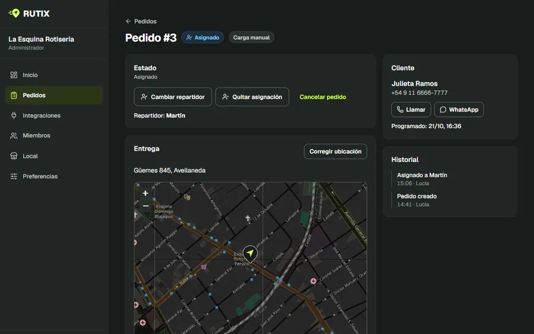
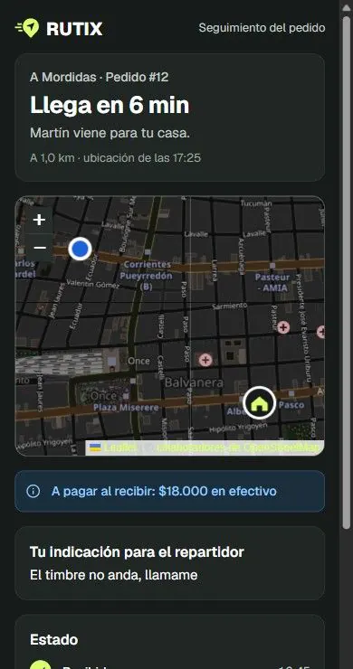

Reparto y seguimiento · SaaS · 2026
En desarrolloRUTIX: que el local y el cliente sepan dónde está cada pedido
Una plataforma para que restaurantes, rotiserías y emprendimientos gastronómicos gestionen sus pedidos, coordinen a sus repartidores y le muestren al cliente, en un mapa, cuándo llega lo que pidió.
- Mi parte
- Producto, identidad y sistema de diseño, desarrollo asistido por IA y tests
- Stack
- Next.js · Expo y React Native · Supabase (PostgreSQL y Edge Functions)
- Fecha
- Octubre de 2026
- Estado
- Etapas 0 a 5 construidas y desplegadas; falta la prueba de campo

El problema
Un local que reparte con sus propios repartidores necesita saber qué pedido lleva cada uno, en qué orden y por dónde anda, y el cliente quiere saber cuándo le llega. Sin una herramienta, todo eso pasa por llamadas y mensajes.
El riesgo mayor no estaba en programar sino en la calle: celulares Android de gama media que cortan los procesos para ahorrar batería y domicilios con coordenadas imprecisas.
Lo que hice
- Escribí el análisis de viabilidad, el modelo de datos, los riesgos de geolocalización, los costos de cada servicio y un plan en etapas, cada una con criterios de aceptación y pruebas.
- Diseñé la identidad y un sistema de diseño con temas claro, oscuro y del sistema, que comparten el panel web y la app desde los mismos tokens.
- Construí tres interfaces sobre los mismos datos: el panel del local (asigna, ordena salidas y ve a los repartidores en vivo), la app del repartidor (mapa, ruta, navegación, cobro) y la página de seguimiento del cliente.


Las decisiones que sostienen todo
- Primero el riesgo. La primera etapa fue una prueba del GPS en segundo plano en celulares reales, antes de construir pantallas.
- Las reglas viven en PostgreSQL. Estados, asignaciones, proximidad y permisos valen igual para el panel, la app y la página pública, aunque alguien llame a la API directamente.
- Un aviso, y solo uno. La proximidad se calcula contra la parada activa y con certeza: todo el margen de error dentro del radio, o dos lecturas confirmadas. Así «está llegando» no se dispara de más ni llega dos veces.
- Nada simulado. Si un canal no está integrado, la interfaz lo dice («WhatsApp automático: no configurado»). El panel arma el mensaje y el local lo envía con un clic desde su número.
- Lo que no se puede garantizar, se muestra. Si el repartidor cierra la app, el panel dice «sin señal desde las…» en lugar de mostrar una posición vieja.
Calidad
315
tests pgTAP de permisos y reglas, pasando contra el Supabase real.
111
tests de las Edge Functions, incluido el cifrado de los avisos push.
139
tests de la app del repartidor (Jest) y de la lógica compartida (Vitest).
Además, un aviso push real de punta a punta contra Google FCM y los builds de la web y de Android verificados.
Estado
Están construidas y desplegadas en Supabase las etapas 0 a 5 del plan: GPS, locales y roles, pedidos e integraciones, reparto, seguimiento del cliente y avisos de llegada. Falta la prueba de campo con repartidores y clientes reales, y el servicio de rutas por calle necesita su clave: sin ella, la app estima por distancia y lo aclara.